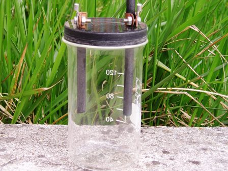
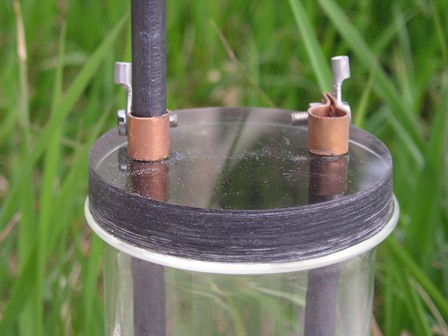

Prendendo spunto da uno dei numerosi video di Youtube (alcuni veramente molto interessanti), ho deciso di replicare una bella reazione redox fatta per elettrolisi, della quale parlerò la prossima volta.
Siccome per qualsiasi elettrolisi appena degna di questo nome serve appunto una "cella elettrolitica" per quanto semplice, andiamo a prepararla...
Per come l'ho fatta io, serve il seguente materiale:

- due carboni di storta di lunghezza opportuna (min. 10 cm)
- un becker cilindrico (senza beccuccio) da 120 ml
- un ritaglio di lastra di plexiglass spessore 12 mm
- due fascette di rame
- trapano a colonna
Posto il carbone come materiale multiuso per gli elettrodi in virtù della sua inerzia chimica, mi sono procurato due carboni di storta "per scriccatura" (cerca con Google questo termine...). Sono simili a quelli delle pile zinco-carbone, ma lunghi circa 30 cm e ramati in superficie; purtroppo non sono facili da trovare, ma il solito amico ha provveduto anche stavolta!
Occorre logicamente sramare i carboni: basta immergerli nell'HNO3 semiconcentrato e lasciarceli quanto basta; poi lavarli accuratamente ed il gioco è fatto.
Fin che si sramano i carboni, andiamo a fare il supporto per gli stessi da porre in testa alla cella...

Con una punta a tazza da 60 mm ed il trapano a colonna (indispensabile) ricavare un disco da un ritaglio di lastra di plexiglass spessa 12 mm, praticando poi due fori dell'esatto diametro dei carboni (6,5 mm) per il passaggio degli stessi.
Questi devono inserirsi a pressione nei fori, con perfetta tenuta, per evitare trafilatura di tracce di liquido durante l'elettrolisi che andrebbero fastidiosamente a corrodere l'attacco elettrico. Questa è l'operazione più delicata perchè gli elettrodi sono molto fragili e per flessione si rompono facilmente. Inseriti i carboni nel supporto, metterci attorno due fascette di rame, alle quali collegare i fili della corrente, ed un velo di grasso siliconico attorno al foro e sulle fascette.
Come contenitore della cella va benissimo un becker cilindrico (senza beccuccio) da 120 ml, che si è dimostrato di diametro e capacità "strategica".
Gli elettrodi non devono raggiungere il fondo della cella perchè occorre lasciare lo spazio per l'ancoretta, dato che l'elettrolisi viene condotta ponendo la cella sull'agitatore magnetico.
Ho fatto un discorso lungo per una cosa semplice! Però una celletta ben fatta ripaga abbondantemente e invoglia a sperimentare, mentre un accrocco che sta in piedi in qualche modo magari anche funziona ma agisce (almeno nel mio caso) in maniera opposta...
La cella è stata collaudata per la sintesi elettrolitica del ..... ed ha funzionato in maniera egregia, senza lasciar uscire la fastidiosa pioggia di microgoccioline trasportate dall'idrogeno, ma solo quello che doveva andarsene (l'idrogeno stesso!).